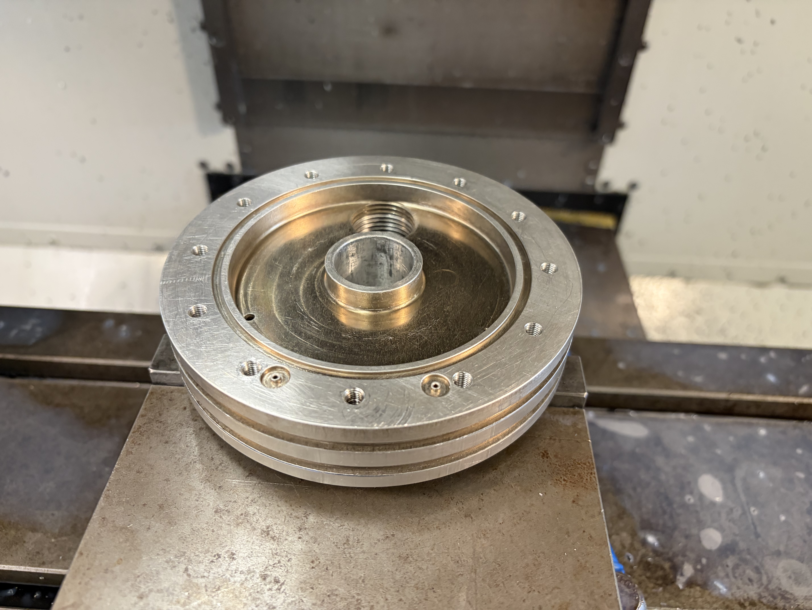
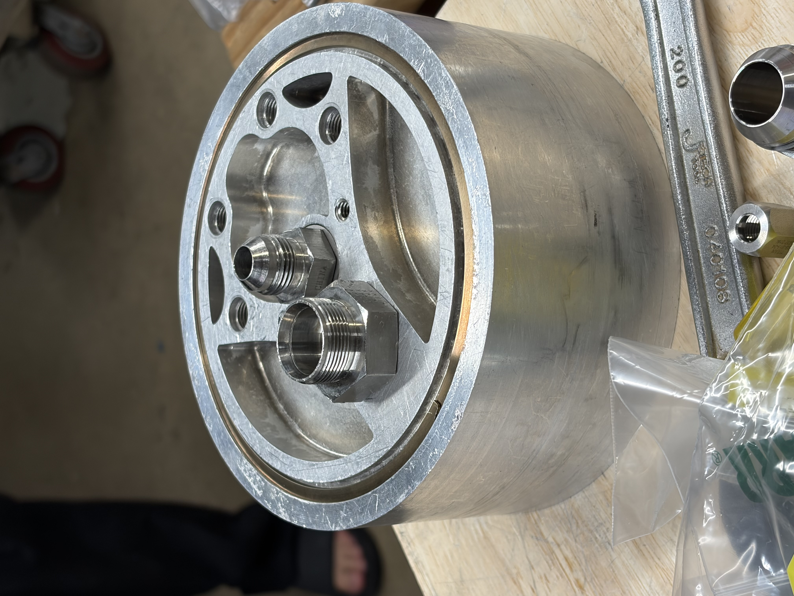

Project Overview
Reworked and rebuilt Barracuda bi-propellent engine injector components for the Rocket Propulsion Group. The primary goal was to improve the seal integrity between the three injector components during water flow testing and hot firing operations, ensuring reliable performance under demanding conditions.
The Challenge
The original engine assembly experienced seal leakage between the three injector components during testing. Key objectives included:
- Improve seal integrity between injector components
- Withstand water flow testing without leakage
- Maintain performance during hot firing operations
- Achieve consistent, repeatable results across all units
Manufacturing Process
Precision CNC Machining
Machined all three injector components to achieve perfect mating surfaces:
- Precision bore machining for component alignment
- Tight surface finish to improve seal contact
- Accurate thread profiles for reliable fastening
- Verified concentricity and perpendicularity

Component Assembly
Carefully assembled the three-component injector stack:
- Cleaned all surfaces before assembly
- Applied appropriate sealing compounds
- Torqued fasteners to specification
- Verified alignment before final assembly

Quality Control & Thread Integrity
Helicoil Installation for Enhanced Thread Strength
To improve thread integrity and increase torque rating, I installed helicoils in critical fastener holes:
- Helicoils provide reinforced threads for higher load capacity
- Allows higher torque values without stripping
- Increases overall structural integrity of the assembly
- Enables reliable repeated assembly and disassembly
Water Flow Testing Preparation
I played a key role in preparing the engine for water flow testing using the horizontal testing stand:
- Assembled engine components to prepare for flow testing
- Monitored for any leakage during pressurization
- Recorded data and verified seal integrity
Water Flow Test
Water Flow Testing Video
Results & Achievements
Testing Outcomes
- Zero leakage detected during water flow testing at full pressure
- Consistent seal integrity across all test cycles
- Improved thread torque ratings through helicoil installation
- Established reliable assembly and testing procedures
Key Skills Demonstrated
- Precision CNC machining and surface finish optimization
- Component assembly and sealing techniques
- Helicoil installation for thread reinforcement
- Test stand setup and operation
- Data collection and analysis during testing
- Problem-solving for leak mitigation